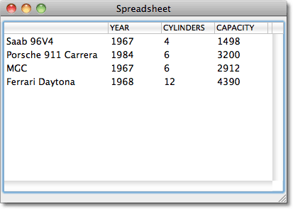
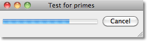
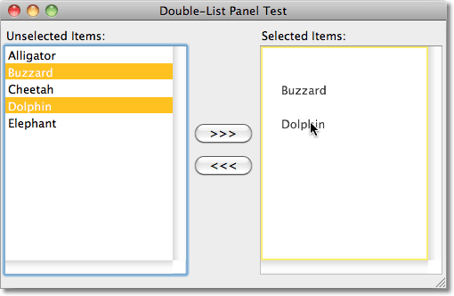

Introduction
I recently undertook the task of converting a series of applications from the now discontinued Macintosh Common Lisp to LispWorks on the Macintosh. The major part of the work was converting the user interface to work with the LispWorks CAPI, which uses a totally different approach, and different terminology, from the user interface extensions in Macintosh Common Lisp.
This cookbook gives a few examples resulting from this experience, generalised in the hope that they will be useful to other LispWorks programmers. They show how to use the LispWorks CAPI to create a number of simple but useful interface applications.
You are free to use, modify, and re-distribute this code however you want.
Latest additions
Simple Tooltips 13th October 2011.
Spreadsheet
A general-purpose multi-column table for displaying data:

Object Editor
A simple object editor for editing the slots in CLOS objects.

Simple Tooltips
Adds tooltip help to the Object Editor:

Multi-Process Dolist
A version of dolist that runs the tasks in parallel, with a progress bar:

Boolean Filters Layout
A filtering-layout with a multi-column-list-panel, and pop-up-menus that implement boolean filters on specified columns of the data:

List Panels with Drag
Adding drag-and-drop between the lists of a double-list-panel:

blog comments powered by Disqus